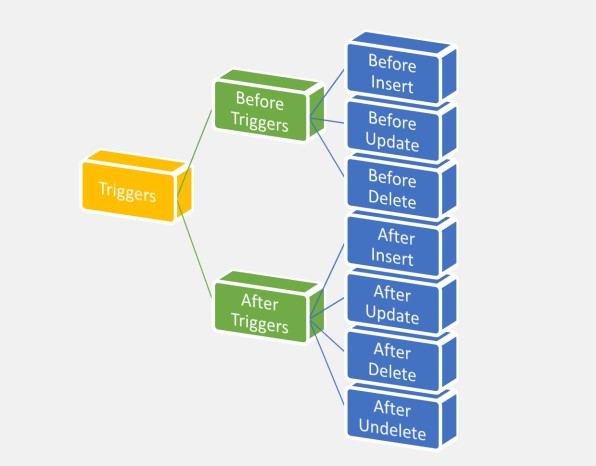

Apex Questions
1.What is Salesforce Apex Programming Language?
- Salesforce Apex language is a multi-purpose programming language and exists in multi-tenant Environment.
- Apex is the world's first Cloud based programming language.
- Apex is an Object-Oriented programming language, which supports all principles of Object-Oriented programming.
2.Salesforce Apex Programming Language Features.
- Salesforce offers Data manipulation language (DML) with built in exception handling.
- Salesforce Object Query Language (SOQL) and Salesforce Object Search language (SOSL) are used to query and retrieve data.
- Apex in Salesforce has built-in record-locking mechanism. This prevents record update conflicts.
Salesforce Apex programming language runs on multi-tenant Environment.- Apex code is stored in Metadata format.
- It has syntax and variables similar to Java.
- It provides unit testing and test execution with code coverage.
- When we want to add web and Email services to your Application.
- It is used to perform complex business processes.
- When can add complex validation rules to your application.
- Salesforce Apex can be used to add a custom logic on operations like saving a record.
3.How many ways to Write Apex Programming?
Salesforce provides the below ways to write the apex code.
- Standard Navigation.
- Developer Console.
- Execute Anonymous Window:
- Eclipse IDE.
4.How many ways To Execute an Apex Code?
We can execute the Apex code by using below formats.
- By using Execute Anonymous Window
- By using Triggers.
- By using Visual Force Pages
- By using Batch Apex
- By using Schedule Programming
- By using Email services
- By using API / Webservices.
5.How many Datatypes are there?
- Datatype describes the following features.
- What type of data the variable can hold.
- How much memory is required to store the data.
Datatypes
Primitive Datatypes: Integer, Long, string, Decimal, Double, Boolean, Date, DateTime, ID, Blob.
SObject Datatypes: Account, Contact, Lead, Opportunity, Case, Solution, Position C, Customer C, etc.
OOPS CONCEPT
6. What is Class?
A class is a Physical entity / Blue print, which contains a collection of variables, functions, procedures, properties, Constructors, etc. Classes are used to achieve the Encapsulation feature of OOP.
Note:
- Class name should be always starts with a Character.
- Class Name should be single word.
- We can't define Two classes with the same name in the application.
- As a Best Practice, Class Name should be starts with a "Capital Letter".
- Each class should be compiled and stored into "Meta data Repository" in Force.com platform.
7. What is Object?
- In-order to assign and access the class members, we need a reference called as an "Object".
- Which is an instance of the class.
Note:
- We can have one or more number of objects per a class.
- Each object should have a unique name. (i.e. we can't define two objects with the same name.)
- Each object holds the values for the class members.
- Each object contains its own memory location.
8. What is Encapsulation?
- Binding (or wrapping) code and data together into a single unit is known as encapsulation.
- Its Provides Security. Ex: Class
9. What is Polymorphism?
- When one task is performed by different ways simply it’s called as polymorphism.
- we use method overloading and method overriding to achieve polymorphism.
10. What is Inheritance?
- When one object acquires all the properties and behaviors of parent object known as inheritance. It provides code reusability.
- It is used to achieve runtime polymorphism.
- A class which is inherited is known as Parent class, Base class or Super class.
- A class which extends base class is known as Derived class or child class.
11. what is Abstraction?
- Hiding internal details and showing functionality is known as abstraction.
- we use abstract class and interface to achieve abstraction. Different levels of hiding the Programming Elements (Variables and Methods)
Keywords:
- private
- protected
- public
- global
Apex Keywords
13. what is this keyword?
This keyword used to represent the current instance of the class.
13. what is Final keyword?
- If you make any variable as final, you cannot change the value of final variable (It will be constant). if the Class declared as final it can't be inherited.
- Final variables can only be assigned a value once, either when we declare a variable or in initialization code
- If the implementation is perfect and does not requires any further modification then make that method is final.
14. what is Super keyword?
- The super keyword can be used by classes that are extended from virtual or abstract classes.
- By using super, we can override constructors and methods from the parent class.
Best Practices for Super keyword:
- Only classes that are extending from virtual or abstract classes can use super.
- You can only use super in methods that are designated with the override keyword.
15. what is Virtual keyword?
- The virtual definition modifier declares.
- virtual keyword declares that the class allows extensions and overrides. classes that are virtual cannot be global
16. what is Abstract keyword?
- The class is declared with keyword abstract and known as abstract class.
- If we don't know the implementation of method nowand can implemented latter then make that method as abstract.
- The abstract definition modifier declares that this class contains abstract methods, that is, methods that only have their signature declared and no body defined.
17. what is With Sharing keyword?
- If you declare a class as with sharing, sharing rules given to the current user will be taken in to the consideration and user can access and perform the operations based on the permissions given to him on objects to fields.
18. what is Without Sharing keyword?
- If you declare a class as without sharing, then this apex class runs in system mode which means apex code has access to all the objects and fields irrespective of current user sharing rules, field level security and Object permissions.
19. what is Interface keyword?
- An interface is like a class in which none of the methods have been implemented the method signatures are there, but the body of each method is empty.
- To use an interface, another class must implement it by providing a body for all of the methods contained in the interface.
20. what is Extends keyword?
- Defines a class that extents another class.
21. what is Implements keyword?
- This keyword is used declare a class that impediments an interface.
22. what is return keyword?
- This keyword returns a value from a method.
23. What is Exceptional Handling - Try, Catch, Finally, Throw?
- Exception occurs during the execution of a program.
We have to handle the excretion in code.
- try: This keyword is used to identifies a block of code in which an exception can occur.
- catch: This keyword is used to identifies a block of code that can handle a particular type of exception.
- finally: This keyword is used to identifies a block of code that is guaranteed to execute.
- throw: This keyword is used to throws an exception, signaling that an error has occurred.
24. what is Synchronous keyword?
- In simple terms you can assume Synchronous as Sequential. In Synchronous process the thread waits for the task to be completed and then moves to the next task Sequentially. All the tasks are completed in a single thread.
- The common example of a Synchronous apex is Trigger.
25. what is Asynchronous keyword?
- In Asynchronous apex the thread does not waits for the task to be completed to move on to the next task. The tasks are run in different threads all together. These threads run in independent silos whenever the system is free.
- Most common example is the Future annotation.
26. What is the difference between non-static and static?
- By default, all the variables and methods are non-static.
- Scope of the non-static variables or methods is within the scope of the same object.
- We can declare variables and methods as static by using static keyword.
- Scope of the static variables and methods is throughout the transaction.
- Static variables and methods, we can directly call with class name (we cannot access static variables and methods with object name).
- The static variable can be used to refer the common property of all objects (that is not unique for each object)
- e.g. company name of employees, college name of students etc.
- The static variable gets memory only once in class area at the time of class loading.
- Static variable can be used in static method only.
- It makes your program memory efficient (i.e. it saves memory).
27. what is Setter method?
- This will take the value from the visual force page and stores to the Apex variable name.
28. what is Getter method?
- This method will return a value to a visual force page whenever a name variable is called.
29. What is Constructor in Apex Programming?
- Constructor in Apex Programming is a code and is a special method that is invoked when an object is created from the class. Constructor has the following properties.
- Method name will be same as Class.
- Access specifier will be public.
- This method will be invoked only one that is at the time of creating an object.
- This is used to instantiate the data members of the class.
COLLECTION CONCEPT
30. What are the types of Collections available in Apex?
- List (ordered and allow duplicates)
- Set (unordered and won't allow duplicates)
- Map (Key and value pair)
31. What is List collection?
- List is Ordered.
- List allows duplicates.
- We can access list elements with index.
- We can sort list elements with sort method (default sorting order is ascending).
- Contains method is not available in List.
- We can process records which are stored in list using DML statements (insert, update, delete and undelete).
List Methods:
1) Add (): This method is used to add an element to the collection.
2) AddAll (): This method will add all the element from the specified collection.
3) Add (Integer IndexPositin, ): This method will insert the element at the specified index position in the collection.
4) Integer Size(): It returns an integer, which indicates the Number of elements exist in the collection.
5) Boolean isEmpty(): This method is used to verify the collection is empty or not.It returns TRUE, when the collection is empty. Else it returns FALSE.
6) Get(): This method is used to get the elements from the collection, based on the index position.
7) Equals(): This method is used to compare the two collections. And it returns TRUE, when both the collections are Same.Else it returns FALSE.
8) Remove (IndexNumber): By using this method, we can remove the element from the collection exist at the specified index position.
9) Clear (): This method will remove all the elements from the collection.
10) Set (indexposition, ): By using this method, we can update the element name with a new value, which is exist in the specified position.
11) SObjectType(): It returns the Datatype of the collection.
32. What is Set collection?
- Set is unordered.
- Set doesn't allow duplicates
- Set elements cannot be accessed with index.
- sort method is not available for Set.
- Contains method is available for Set to search for a particular element in the set.
- We cannot process records which are stored in set using DML statements.
List Methods:
1) Add(): This method is used to add a new element to the collection.
2) AddAll(): This method is used add all elements exist in the specified collection to Set Collection class.
3) Integer Size (): It returns an integer, which indicates the number of elements exist in the collection.
4) Boolean isEmpty(): It returns TRUE, if the collection is Empty. Else it returns FALSE.
5) Contains(): This method returns TRUE, when the collection contains an element with the specified name.
6) Equals(): This method is used compare two Set collection objects. And it will return TRUE, when both the collections are same. Else it returns FALSE.
33. What is Map collection?
- A map is a collection of key-value pairs
- Each unique key maps to a single value. Keys can be any primitive data type, while values can be a primitive, sObject, collection type or an Apex object.
Map Methods:
1) keyset(): To fetch only keys from the map.
2) values(): To fetch only values from the map.
3) containsKey(value): To search a key from the map.
4) get(key): By supplying the key we can fetch the value.
5) put(key,value): To add key and value in a map.
DML CONCEPT
34. What are the DML statements available in Apex?
- By using DML statements, we can perform the operations on the salesforce object records.
- DML operations can be used for both Standard and custom objects.
- By using DML statements, we can perform the operation on either one or more records.
Apex Provides the Below DML Statements.
1) Insert
2) Update
3) Delete
4) Undelete
5) Upsert (Combination of insert and update)
6) Merge (Combination of update and delete)
35. What is INSERT?
- By using this statement, we can insert one or more records into the object.
36. What is UPDATE?
- This statement is used to modify the data that is already commited in the database.
- To update we need 'ID' of the record
37. What is DELETE?
- By using this statement, we can remove either one or more records from the object.
Note:
- To remove the record, record Id is enough.
- Deleted records will be stored in recyclebin till 15 days.
38. What is UNDELETE?
- This statement is used to get the deleted records(from Recyclebin) back to the actual object.
39. What is UPSERT?
- It is a combination of "Insert + Update".
- By using these statements, we can perform both insert and update operations at a time.
Note:
1. The records, which are having the Id's will be updated into the Database.
2. The records, which are not having the Id's will be inserted into the object.
40. What is MERGE?
- Join to or more records into a single record is called merge
- Syntax: Merge sobject1 sobject2
When we merge child records of sobject2 are reassigned to sobject1 .Then sobject2 is deleted
41. What are the Governor Limits for DML?
- We can have max. of 150 DML operations in a single transaction.
- EX: If the user performs more then 150 DML operations, then salesforce raises "System.LimitExecption: Too Many DML Operations : 151".
- By using a single operation, we can process max. of 10,000 records.To overcome / to bypass the Governor Limits, we need to use "Bulkification Process"
SOQL CONCEPT
42. Ways to Execute a SOQL Query?
We can execute the SOQL Query by using the below ways..
1. Using Query Editor.
2. Using Apex Programming
3. Using Data Loader
4. Using Workbench.
43. What Are The Types of SOQL Statements in Salesforce?
Salesforce Object Query Language is used to query that records from the database.com based on the requirement. There are 2 types of SOQL Statements:
1. Static SOQL
2. Dynamic SOQL
Static SOQL:
- The Static SOQL Statement is written in [] (Array Brackets)
- These statements are similar to IINQ (Ion Integrated Query)
Dynamic SOQL:
- It is used to refer to the creation of a SOQL string at run time with Apex code.
- Dynamic SOQL enables you to create a more flexible application.
- To create Dynamic SOQL query at run time use Database.Query() method, in one of the following ways.
- Return a single sObjects when the query returns a single record.
- sObjects s = Database. Query(String_limit_l);
- Return a list of sObjects when the query returns more than a single record.
44. SOQL Clauses?
- WHERE
- GROUP BY
- HAVING
- ORDER BY
- LIMIT
- OFFSET ALL ROWS
- FOR UPDATE.
45. What is The SOSL Statements in Salesforce?
SOSL: (Salesforce Object Search Language)
- By using SOSL, we can search for the required content in one or more objects in salesforce.
- By using SOSL, we can search the content in all columns in the objects.
Best Practice’s
1. We can call the SOSL Queries from all the apex classes.
2. It is recommended, to avoid the usage the SOSL queries inside the "Triggers".
3. SOSL Query will search the content in All Text fields, Email Fields and Phone Fields
46. Diff b/w SOQL and SOSL?
| SOQL | SOSL |
| Salesforce Object Query Language | Salesforce object search Language |
| Per single Transaction we can write 100 SOQL queries | Per single Transaction we can write 20 SOSL queries |
| Per single Transaction retriving the data 50k Records | Per single Transaction retriving the data 2k Records |
| return type List<Sobject> | return type List<List<Sobject>> |
| Select Keyword | Found Keyword |
| Fetching the data in single object or related object data | Every object will have a field and a record |
| It can be use in triggers | It can be use in triggers |
BATCH APEX
47. What is Batch Apex?
- Large amount of data divided in to no of batches. every batch processed separately is called batch apex
48. why we use batch apex?
- overcome the governor limits that’s y we are using batch apex
- By using Batch apex, we can perform the DML operations on the bulk records at a time.
- Batch Apex allows us to process max. of 50 million records.
- Batch apex jobs will executed out side of the Salesforce organization by using the Salesforce resources.
- Note: All Batch Apex classes should be defined with the Access specifier "Global".
- To implement the batch process, we need to use an interface called as Database.Batchable".
- start method and finish method executes only one time. but execute method executes multiple times. per every execute method have fresh governor limits
49. Batch apex methods?
1) start method
2) execute method
3) finish method
Start method
- It will prepare the records to process and execute only one time.
Execute method
- It will take the records prepared in start method and split those records into batches and it will execute multiple times.
- For example if the start method is returning 1000 records then execute method executes 5 times if you don't mention the batch size (Default Batch Size is: 200).
- Maximum batch size is: 2000. Finish method We can perform post commit logic like sending emails with the success or error information. It will execute only one time.
50. can we call webservice callouts from batch apex?
- yes we can call up to 100 database.allowcallouts=true
51. What is Database.Batchable interface?
- The class that implements this interface can be executed as a batch Apex job.
52. What is the Database.QueryLocator?
- If we use a Database.QueryLocator, the governor limit for the total number of records retrieved by SOQL queries is bypassed. (Default 50,000 It allow up to 50 million records).
53. What is the iterable?
- If you use an iterable, the governor limit for the total number of records retrieved by SOQL queries is still enforced.
54.Can we call another batch apex from batch apex?
- Yes you can call a batch apex from another batch apex .Either in start method or in finish method you can call other batch
55. Batch is synchronous or Asynchronous operations?
- Asynchronous operations.
56. What is the maximum size of the batch and minimum size of the batch ?
- The default batch size is 200 records. Min 1 max2000
57. What is the Database.BatchableContext?
- BatchableContext Interface is Represents the parameter type of a batch job method and contains the batch job ID.
- This interface is implemented internally by Apex.
58. How to track the details of the current running Batch using BatchableContext?
- You can check the AsyncApexJob.Status using the JobId from the Database.BatchableContext.
59. How many batch jobs can be added to queue?
- Queued counts toward the limit of 5.
60. What is Database.State full interface?
- To maintain variable value inside the Batch class, Database.Stateful is used.
61. What is AsyncApexJob object?
- AsyncApexJob is Represents an individual Apex sharing recalculation job.
- Use this object to query Apex batch jobs in your organization.
62. When a BatchApexworker record is created?
- For each 10,000 AsyncApexJob records, Apex creates one additional AsyncApexJob record of type BatchApexWorker for internal use.
63.What is Database.AllowCallouts?
- To use a callout in batch Apex, you must specify Database.AllowsCallouts in the class definition
EMAIL SERVICES
64. Create a EmailService?
SETUP>BUILDER>DEVELOPER>EMAIL SERVICES> NEW EMAIL SERVICES
65. what is email service in salesforce?
- The email services are automated process that use apex classes to process the contents, headers and attachments of inbound email
- example: we can create an email services that automatically creates a contact records based on contact information message
66. what are the different types of email services?
1) Outbound email service
2) Inbound email service
67. what is outbound email service?
if we want to send an email from salesforce to external system using outbound message we can send.
68. what is inbound email service?
if we received any email from external system to salesforce then we call it as inbound email.
69. what are the types of outbound email service?
Two types
1) Single email message
2) MassEmailMessage
1.Single email message :
- single email message we can send message related to only single record
- the single email message contains the methods and classes that are required to send an email these are defined messaging.singleemailmessage==name space
it contains the methods like
SetBccAddresses(bccAddresses)
This method will set Bcc Address to the whom the email should be sent. We can set up to 25 email addresses.
setCcAddresses(ccAddresses)
This method will set CcAddress to whom the mail should be sent. We can set utp 25 email address.
setToaddress()
This method will set the address, we can set up to 100 addresses.
setSubject(string)
setSubject( ) method will set the subject of mail.
setPlainTextBody()
setPlainTextBody() will set the main body of the mail.
setHtmlBody(htmlBody)
setHtmlBody( ) will set the main body of the mail.
2. MassEmailMessage :
- Through MassEmailMessage we can send a mass email messages to a recipient list that consists of contacts, Leads, Person accounts or users you can view in Salesforce.
- when we want to send a different email template to different set of recipients we use mass email message
- we can up to 250 emails
Messaging.MassEmailMessage
Messaging.MassEmailMessage class all the methods defined in the Email class and also Email base class methods.
70. what is inbound email message?
- if you want to receive a email from external system to salesforce we use inbound email message based on the details or information available in the message we can create account, contact, case
- if we want to acheive the concept of inbound email that class has implemented an interfacecalled messaging.inboundemailresult
messaging.inboundemailresult
this method contains the datamember called success information,whose value is set to true if the email handled properly
messaging.inboundemail
this class contains the properties of the email which is received as in bound from name,from adress,subject,plaintextbody etc
messaging.inboundenvelope
this class contains to and from address of the inbound email which is received
messaging.inboundemailhandler
it is an interface defined in messaging name space.
1. This is a interface which need to implemented to handle the inbound emails
2. Any class which is implementing this interface has to define a handleInboundEmail method
Messaging.InboundEmailResult :
This is a predefined apex class which contains a boolean variable success
1. if we set success=true email is handled successfully
2. if we set success =false email is not handled successfully
Messaging.InboundEmail:
This is a predefined Apex class which contains the values of email what we recevied as inbound
1. fromAddress
2. fromName
3. toAddress
4. subject
5. plainTextBody
Messaging.InboundEnvelope
This is a predefine Apex class which contains to and from address of the inbound email
TEST CLASS
71. Ways to Write Test Classes?
1. Using Standard Navigation
2. Using Developer Console
3. By using "Eclipse IDE
72. Ways to Run Test Classes?
1. Using Standard Navigation:
Go to Setup --> go to "Build" menu in left panel
Click on "Develop" and expand it.
Click on "Apex Classes" link.
Select the Apex Test Class.
Click on Run Test Button.
2. Using Developer Console:
go to Your Name --> Click on "Developer Console" link.
go to "File" menu.
Click on "New" menu item.
Click on "Apex Classes" from "Submenu".
Enter the "Apex Test Class Name" in the Text box, provided by the Dialog box.
Write the "Test Class Code" and Save the code by using "CTRL + S".
Click on Run Test Button.
73. Best Practices for Test classes?
- Before Knowing how to write Test Classes in Apex Salesforce we should know why we write Test Classes.
- We write Test Classes In Apex Salesforce for Unit Testing.
- We get to find the bugs in our code and fix it to give better output. Testing gives the Code Coverage.
- After developing an apex class or apex trigger we should write the unit tests(Test Class) and ensure that we are able to execute at least 75% of the lines of code.
- If you are moving the code from sandbox to sandbox then code coverage is not required.
- If you are moving the code from sandbox to production at-least 75% code coverage is required.
- IF the code coverage is less than 75% deployment will fail.
- You have to start your class with @isTest annotation, then only Salesforce will consider this class as test class.
- Keep your class as Private, and the best practice is to name your test class as your original Class or trigger Name + ‘Test’.
Syntax:
1. @isTest
2. private class MyTestClass {
3. @isTest
4. static void myTest1() {
5. }
6. static testMethod void myTest2() {
7. }
8. }
Note: Test Class can be either public or private.
- @isTest annotation with testmethod is equivalent to testMethod keyword.
- Test method should static and no void return type.
- Test class and method default access is private, no matter to add access specifier.
- You can’t send email from test method.
- @testSetup to create test records once in a method and use in every test method in the test class.
- Maximum number of test classes run per 24 hours of period is not grater of 500.
- We should not focus on the percentage of code coverage.
- we should make sure that every use case should covered including positive, negative, bulk and single record .
- Calls to System.debug are not counted as part of Apex code coverage.
- Test method and test classes are not counted as a part of code limit.
74. Apex tests will not:
1) Commit changes to the database.
2) But SOQL queries will find records created during the test.
3) Perform callouts to external Web services.
4) Send outbound email.
5) Return results from SOSL searches.
75. Test Requirements in Production?
1. 75% of Apex statements must be executed (strive for 100% code coverage)
2. All Apex triggers must be called.
3. All Apex tests must execute without throwing any uncaught exceptions or exceeding governors
Step 1: Positive Path
Verify that when passed valid inputs, called code completes without throwing an exception.
Step 2: End state
Verify data-defined outcomes with assertions
System.assert()
System.assertEquals()
System.assertNotEquals()
Step 3: Negative Path
Verify that when passed invalid inputs, exceptions are properly handled
Step 4: Governors
Verify that code is bulk ready.
Pass up to 200 records.
Trade-off between test performance and effectiveness
76. What is the purpose of seeAllData ?
By default test class cannot recognize the existing data in the database.
if you mention @isTest(seeAllData = true) then test class can recognize the existing data in the database.
If possible Don’t use seeAllData=true, Create your Own Test Data.
77. What is the purpose of Test.startTest() and Test.stopTest()?
- StartTest and StopTest are standard test methods which are available for test classes
- Test.startTest() and Test.stopTest() maintains fresh set of governor limits. [ These methods help you to reset your governor limits ]
- Per testMethod we can use Test.startTest() and Test.stopTest() only for one time. To execute asynchronous methods synchronously we can call those methods from inside of Test.startTest() and Test.stopTest().
- Once your test code runs between Test.startTest() and Test.stopTest(), you must use assert statements to test whether your actual code is executing correctly and giving the results as expected.
78. What is the purpose of system.runAs()?
- By default test class runs in System Mode.
- If you want to execute a piece of code in a certain user context then we can use system.runAs(UserInstance).
- To avoid MIXED-DML-OPERATION error we can include DML statements inside of system.runAs().still the error persists keep DML statements inside of Test.startTest() and Test.stopTest().
- Use System.runAs() method to enforce OWD and Profile related testings. This is very important from Security point of View.
79. What are the assert statements?
To compare Actual value and Expected value we use assert statements.
80. Types of assert statements?
System.assertEquals(val1,val2)
If both val1 and val2 are same then test class run successfully otherwise test class will fail.
System.assertNotEquals(val1,val2)
If both val1 and val2 are not same then test class run successfully otherwise test class will fail.
System.assertEquals(val1> val2)
If the condition satisfied then test class run successfully otherwise test class will fail.
81. What is the purpose of @TestVisible?
private variables and methods in apex class we can include @TestVisible so that even though variable is private we can access from the test class.
TRIGGER CONCEPT
82. What is trigger?
- Trigger is piece of code that is executes before and after a record is Inserted/Updated/Deleted from the force.com database.
- Trigger is a Custom Business logic to perform the operations on one or more records upon DML Events.
- Triggers will get fired automatically based on the DML operations performed on the object.
- Trigger can be fired "Before" or "After" performing the operation.
- By using Triggers, we can perform complex validation rules and Transactional flows.
- Triggers are "Asynchronous" operations.
- By using Triggers, we can perform all DML manipulations on either one or more object records.
- Triggers will get fired based on the Events [ before insert, after insert, before update, after update, before delete, after delete, after undelete]
83. Ways to Create Triggers?
Salesforce provides the below 3 ways to create a Trigger.
1. Using Standard Navigation:
- Goto Setup --> Goto "Build" menu in left panel
- Click on "Develop" and expand it.
- Click on "Apex Triggers" link.
- Click on "New" button, to create a New Trigger.
- Write the Trigger Code in the Editor.
- Click on "Save" button, to save the Trigger code in "Metadata Repository".
2. Using Developer Console:
- Goto Your Name --> Click on "Developer Console" link.
- Goto "File" menu.
- Click on "New" menu item.
- Click on "Apex Triggers" from "Submenu".
- Enter the "Trigger Name" in the Text box, provided by the Dialog box.
- Select the "Object Name", on which we need to create the Trigger from the Picklist.
- Click on "Create" button.
- Write the "Business Logic in the Triger" and Save the code by using "CTRL + S".
3. By using "Eclipse IDE".
84. De-Activating the Trigger?
We can also de-activate the Trigger, when it is no longer needed as below.
- Goto Setup --> Goto "Build Menu"
- Click on "Develop" and expand it.
- Click on "Apex Triggers" link.
- Select the Trigger to "De-Activate"
- Unselect the Checkbox "Active"
- Click on "Save" button.
85. Delete the Trigger?
- We can also Delete the Trigger, when it is no longer needed as below.
- Goto Setup --> Goto "Build Menu"
- Click on "Develop" and expand it.
- Click on "Apex Triggers" link.
- Select the Trigger to "Delete".
86. Different Triggers in Salesforce?
Triggers in Salesforce are two types,
1) Before Triggers.
2) After Triggers.
1 . Before Triggers?
These triggers are fired before the data is saved into the database.
2 . After Triggers?
These triggers are fired after the data is saved into the database

87. Before Insert?
We can execute the complex business logics and Complex validation rules before inserrting the record into the object, which can be fired based on "Before Insert" event.
Ex: Validation Rules, etc.
88. After Insert?
By using this event, we can fire the actions which contains the business logic to be performed after inserting a new record.
Ex: Sending Email Notifications, etc.
89. Before Update?
By using this event, we can invoke the actions which performs certain operations before updating the record.
Ex: Validations, etc.
90. After Update?
By using this event, we can invoke the actions which performs the operations after updating the records.
Ex: Replicate the record values, Sending Email Notifications, etc.
91. Before Delete?
By using this event, we can fire the actions which perform the operations before removing the records from the object.
Ex: Access verifications, removing all child records, etc.
92. After Delete?
By using this event, we can fire the actions which perform the operations after deleting the records from the object.
Ex: Sending Notifications, Updating Rollup Summary values, etc.
93. After UnDelete?
By using this event, we can fire the actions to be performed after re-storing the records back to the object.
Ex: Sending Notifications, Updating Rollup Summaries, etc.
Syntax:
1. ON ()
2. { a. // Write the Business Logic..
3. }
Note:
- We can have one or more Triggers per an object.
- As a Best Practice, it is always recommended to have only one Trigger per an object.
- (Because, we don't have the options in salesforce to control the execution order of the triggers.)
94. Trigger Context Variables?
By using Trigger Context variables, we can get the current state of the triggers. (To capture the runtime information, we use trigger context variables)
- Trigger.isInsert: Returns true if the trigger was fired due to insert operation.
- Trigger.isUpdate: Returns true if the trigger was fired due to update operation.
- Trigger.isDelete: Returns true if the trigger was fired due to delete operation.
- Trigger.isBefore: Returns true if the trigger was fired before record is saved.
- Trigger.isAfter: Returns true if the trigger was fired after record is saved.
- Trigger.New: Returns a list of new version of sObject records.
- Trigger.Old: Returns a list of old version of sObject records.
- Trigger.NewMap: Returns a map of new version of sObject records. (map is stored in the form of map)
- Trigger.OldMap: Returns a map of old version of sObject records. (map is stored in the form ofmap)
- Trigger.Size: Returns a integer (total number of records invoked due to trigger invocation for the both old and new)
- Trigger.isExecuting: Returns true if the current apex code is a trigger.
95.Can we call the callouts from trigger?
yes we can. It is same as usual class method calling from trigger. The only difference being the method should always be asynchronous with @future
96. What is the recursive trigger?
Recursion occurs in trigger if your trigger has a same DML statement and the same dml condition is used in trigger firing condition on the same object(on which trigger has been written)
97. What is the bulkifying triggers?
By default every trigger is a bulk trigger which is used to process the multiple records at a time as a batch. For each batch of 200 records.
98. What is the use of future methods in triggers?
Using @Future annotation we can convert the Trigger into a Asynchrinous Class and we can use a Callout method.
99. How do we avoid recursive triggers?
Use a static variable in an Apex class to avoid an infinite loop. Static variables are local to the context of a Web request.
100. How many triggers we can define on a object?
We can write more than one trigger But it is not recommended .Best practice is One trigger On One object.
101. Can we call batch apex from the Trigger?
A batch apex can be called from a class as well as from trigger code.
In your Trigger code something like below :-
// BatchClass is the name of batchclass
BatchClass bh = new BatchClass();
Database.executeBacth(bh);
102. Order of execution of triggers?
1) fetch the data in to database
2) system validations
3) before triggers
4) custom validations
5) save the record to s object
6) after triggers
7) assignment rules
8) auto response rules
9) workflow rules --> Any field update there again fire ==> before triggers /after triggers
10) escalation rule
11) rollup summery
12) criteria based sharing
13) commit record
14) email actions
103. what are the errors you faced in triggers?
1) system.limit exception (soql query 101 exception)
2) system.nullpointer exception dereference null object
3) recursive trigger
4) missing the required field
104. Few more Best Practices for Triggers?
- There should only be one trigger for each object.
- Avoid complex logic in triggers. To simplify testing and resuse, triggers should delegate to Apex classes which contain the actual execution logic. See Mike Leach's excellent trigger template for more info.
- Bulkify any "helper" classes and/or methods.
- Trigers should be "bulkified" and be able to process up to 200 records for each call.
- Execute DML statements using collections instead of individual records per DML statement.
- Use Collections in SOQL "WHERE" clauses to retrieve all records back in single query
- Use a consistent naming convention including the object name (e.g., AccountTrigger)
105. Best practice for visual force page?
1.Accessing component IDs
2.Page block components
3.Controllers and controller extensions
4.Improving Visualforce's performance
1. Static resources
2. Rendering PDFs
3. Using component facets
5.viewstate error we can avoid trasiant key word/action region/javascript
106. Order of execution of visual force page?
- invoking the controller
- invoking the constructor
- invoking the methods
- invoking the getter and setter methods
107. What can cause data loss in Salesforce?
- There are many things which can contribute to the data loss in Salesforce. Which includes
- Migrating to number, per cent, and money, from other data types.
- When you change the date and time
- Migrating to multi-select picklist from any other type but except picklist.
- Moving from Checkbox, auto number, multi-select picklist to any other types.
- Changing text area to phone, URL, email, or text.
108. A basic batch class Example to update the account name
global class batchExample implements Database.Batchable<sObject> {
global Database.QueryLocator start(Database.BatchableContext BC) {
// collect the batches of records or objects to be passed to execute
String query = 'SELECT Id,Name FROM Account';
return Database.getQueryLocator(query);
}
global void execute(Database.BatchableContext BC, List<Account> accList) {
// process each batch of records
for(Account acc : accList)
{
// Update the Account Name
acc.Name = acc.Name + 'InterviewPreparation';
}
try {
// Update the Account Record
update accList;
} catch(Exception e) {
System.debug(e);
}
}
global void finish(Database.BatchableContext BC) {
// execute any post-processing operations
}
}
To Run the Batch class
batchExample be = new batchExample();
database.executeBatch(be,100);
109. A basic Queueable class Example to append "InterviewPreparation" at the end of account name
public class AccountQueueableExample implements Queueable {
public List<Account> accList ;
public AccountQueueableExample(List<Account> accList){
this.accList = accList ;
}
public void execute(QueueableContext context) {
for(Account acc :accList){
// Update the Account Name
acc.Name = acc.Name + 'InterviewPreparation';
}
update accList;
}
}
Run the job from the execute anonymous with below code
List<Account> accList = [Select Id , Name from Account ];
ID jobID = System.enqueueJob(new AccountQueueableExample(accList));
System.debug('jobID'+jobID);
Test class for the Queueable class
@isTest
public class AccountQueueableExampleTest {
@testSetup
static void setup() {
List<Account> accounts = new List<Account>();
// add 100 accounts
for (Integer i = 0; i < 100; i++) {
accounts.add(new Account(
name='Test Account'+i
));
}
insert accounts;
}
static testmethod void testQueueable() {
// query for test data to pass to queueable class
List<Account> accounts = [select id, name from account where name like 'Test Account%'];
// Create our Queueable instance
AccountQueueableExample accQObj = new AccountQueueableExample(accounts);
// startTest/stopTest block to force async processes to run
Test.startTest();
System.enqueueJob(accQObj);
Test.stopTest();
// Validate the job ran
System.assertEquals(100, [select count() from account where Name like = '%sfdcpoint%']);
}
}
110. Scheduling the apex at 1:53 PM on 7th Dec 2017, for deleting contacts which are created today
public class Scheduleapex implements schedulable {
public void execute(SchedulableContext sc){
list<contact> accs=[select id,lastname from contact where createddate=TODAY];
delete accs;
}
}
Code to schedule Apex Class
Scheduleapex sa=new Scheduleapex();
string expression='0 53 13 7 12 ? 2017';
system.schedule('vipin',expression,sa);
111. A basic Future class Example
public class FutureAcc {
public void acc(){
List<Account> acc=[select id,Email__c,fax,phone from Account where industry='banking'];
for(account a:acc){
// a.phone='+9999999';
a.Email__c='salman@gmail.com';
update a;
}
}
@future
public static void accs(){
List<Account> acc=[select id,Email__c,fax,phone from Account where industry='Education'];
for(account a:acc){
//a.fax='+911111111';
a.Email__c='Test@gmail.com';
update a;
}
}
public void accss(){
acc();
accs();
}
}